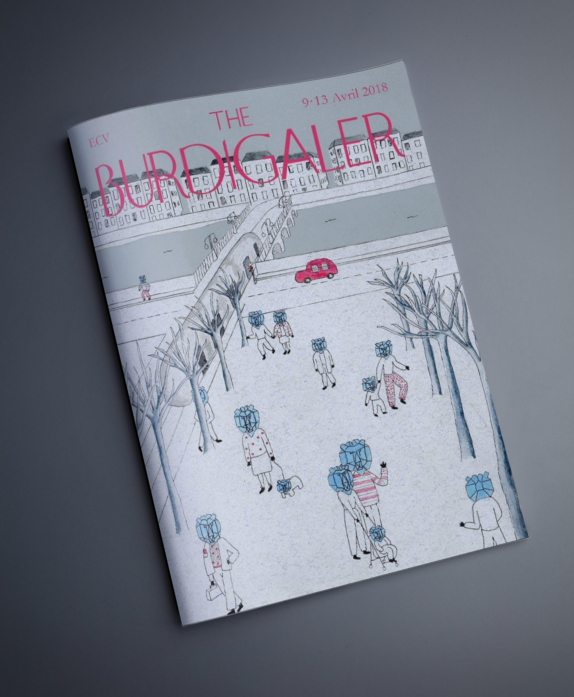
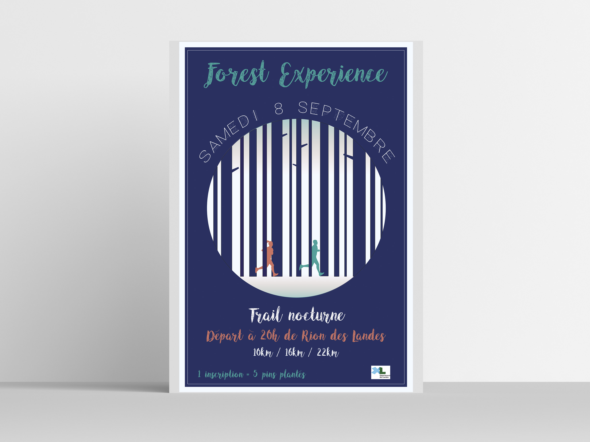

Bienvenue
Typographie
Voici Mosaïque, une typographie créée en pochoir.

Doritos
Proposition, une affiche pub pour doritos.
J'ai choisi de montrer le côté piquant et explosif du produit en l'illustrant par un volcan.
Ici une illustration plus explosive.
Bordeaux dans un coca
Projet réalisé en cours d'illustration, en s'inspirant de la collab Coca x Ivan Bravo.
Voici ma version pour le ville de Bordeaux.
Les filles du Docteur March
Pour un cours d'édition, en collab avec le cinéma Utopia à Bordeaux, nous avons dû réaliser une affiche de film typographique.
Réalisée en partenariat avec Marie-Liesse Tardieu.
Musique de RU
Concours d'affiche. Ma proposition pour le tremplin musical Musique de Ru organisé par le Crous.

The Burdigaler
Au cours d'un workshop avec Freak City, nous avons réalisé des couvertures pour le magasine fictif : the Burdigaler, dans l'esprit de The New Yorker.
Fête de la mer
Affiche évennementielle, pour la fête de la mer à Capbreton.

Forest Expérience
Projet de fin d'année de Prepa, pour un évènement fictif.
50 ans
Premier pas sur la lune, ça se fête, et after effect en prime.
Destruction
Affiche photomontage.
Photographies
Ceci est une photo qui n'est pas libre de droits.
Children
Bali, mars 2017

Ceci est une photo qui n'est pas libre de droits.
Salar de uyuni
Bolivie, février 2016

Ceci est une photo qui n'est pas libre de droits.
Sunset colombien
Colombie, janvier 2016!
A little bit more
Bonjour,
moi c'est Emilie, apprentie illustratrice et passionnée par le monde.
Ici vous trouverez des travaux que j'ai réalisé au cours de ma formation (ECV Bordeaux), mais aussi pleins de projets personnels.
Entre autres, de nombreuses photographies que j'ai réalisé lors de mes expéditions sur cette magnifique planète terre.
Ce que j'aime c'est dessiner, oui, mais pas que...
J'aime faire passer des messages, créer des concepts visuels qui ont du sens et de la logique.
J'aime me promener et observer ce qui m'entoure, c'est une immense source d'inspiration pour moi.
Au travers de ce site, je vous emmène à la découverte de mon univers.
Bonne visite,
Avec tout mon amour,
Emilie.